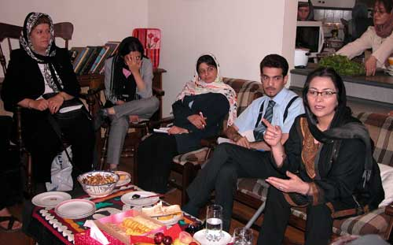

|
|

نشست صمیمانه برخی از اعضای کمپین از شهرهای مختلف ایران: به رغم همه مشکلات، راهی جز ادامه و گسترش کمپین وجود ندارد
گزارش:مریم مالک،مریم حسین خواه/عکس:راحله عسگری زاده
شنبه31 شهریور 1386
فعالان یک میلیون امضا در شهرهای مختلف ایران، جمعه 31 شهریور ماه در تهران گردهم آمدند و تجارب فعالیت یکساله خود را در نزدیک به 15 شهر در سراسر کشور مورد بحث و تبادل نظر قرار دادند. فعالان شهرهای تبریز، رشت، زنجان، همدان، اصفهان، شیراز، یزد، مشهد، گرگان، سنندج، قم، قزوین،کرمانشاه،بابل و کرج از جمله شهرهایی هستند که در یکسال فعالیت کمپین به صورت رسمی به آن پیوسته اند و با برگزاری کارگاه آموزشی در شهرشان در حال جمع آوری امضا برای اعتراض به قوانین تبعیض آمیز هستند.
نشست روز جمعه اعضای کمپین در شهرهای رشت، قزوین، همدان، سنندج، کرمانشاه، بابل، کرج و تهران همچون سایر نشست های کمپین و به خاطر محرومیت فعالان این کمپین از فضاهای عمومی شهر، در منزل یکی از اعضای کمپین برگزارشد.
این نشست 7 ساعته با پیشنهاد خدیجه مقدم، عضو کمیته مادران برای برگزاری یک سلسله نشست های ثابت بین فعالان شهرهای مختلف آغاز شد. اصلی ترین برنامه این نشست ارائه گزارش فعالیت و چالش های کمپین در شهرهای مختلف بود.

قزوین: می خواهیم کارمان تداوم داشته باشد
قزوین که از خرداد 86 به کمپین پیوسته است، گزارش خود را با توضیح موقعیت فعالان زن در این شهر آغاز کرد:«در قزوین بعد از پیش آمدن قضیه سنگسار در تاکستان، بر همه فعالان زن قزوینی از جمله فعالان کمپین یک میلیون امضاء خیلی حساسیت ایجاد شد و به همین دلیل ما روند فعالیتهایمان را کندتر کرده و ابتدای فعالیتهایمان را به دلایل مسائل امنیتی از خانواده ها شروع کردیم.»
آیدا سعادت، از فعالان این شهر ادامه داد:«قزوین شهری است که 8 سال پیش فعالین در آنجا کارگاه کنفوانسیون را برگزار کرد. حقوقدانان فعالی نیز داریم که قبل از کمپین هم فعالیتهای اجتماعی داشتند.»
مریم اکبری، از دیگر فعالان این شهر نیز در رابطه با چگونگی جمع آوری امضا گفت:«برنامه ما برای امضا جمع کردن این طور بود که به مهدکودکها و مراسم ویژه ای مثل جشنهایی که به مناسبت روز جهانی کودک برگزار می شود می رویم و امضا جمع می کنیم.»
به گفته او فعالان کمپین در قزوین علاوه بر تلاش برای جذب داوطلب موفق به برگزاری کارگاه های حقوقی در این شهر شده اند و تلاش دارند با نقاط مختلف استان قزوین نیز ارتباط بگیرند.«مثلاً در جنوب، با گروهی از هنرمندان و نویسندگان وارد گفتگو شدیم تا آنها را جذب کمپین کنیم، می خواهیم در قزوین کارمان تداوم داشته باشد، فضای قزوین با تهران فرق دارد یک فضای بسته دارد و تقریباً همه مردم همدیگر را می شناسند، و به همین خاطر مشکلات بیشتر است اما به رغم همه این مشکلات ما در تلاش هستیم که برای گسترش کمپین و جذب داوطلبان جدید برنامه ریزی های منسجم تری داشته باشیم.»
کرمانشاه:ادامه فعالیت زیر تیغ تهدیدهای امنیتی
«حال و هوای کرمانشاه با همه جا فرق دارد و فضای امنیتی در شهر ما سنگین تر است. تفاوت قومی، نژادی و مذهبی آنقدر زیاد است که کرمانشاه را هندوستان دوم می نامند، در کرمانشاه با این وضعیت امضاء جمع کردن واقعا هنر بزرگی است.»
روژان کرمانشانی از فعالان کمپین در کرمانشاه، با این شرح حال گزارش خود را آغاز کرد. او با اشاره به اینکه سطح مطالعه در بین مردم کرمانشاه پایین است، گفت: «تمام این مسائل بر تشکیل انجمن ها و NGOها تاثیر گذاشته و اکثر NGOها در کرمانشاه با موانع بسیار امنیتی روبه رو شده اند و بیشترشان به تعطیلی کشیده شده اند. به گونه ای که در حال حاضر تنها یکی دو تا از انجمن های این شهر فعال هستند.»
با این وضعیت کمپین یک میلون امضا در کرمانشاه از خانواده ها آغاز شده و وقتی به کار خیابانی گسترش پیدا کرده،فعالان آن دستگیر و بازجویی شده اند و از برخی فعالان کمپین نیز تعهد گرفته اند که دیگر با این کمپین کار نکنند.
با همه اینها کمپین در کرمانشاه نیز متوقف نشده و پس از 9 ماه فعالیت حتی تا شهرهای مرزی همچون جوانرود نیز گسترش یافته است.
سنندج:استفاده از همه روش ها برای پیشبرد کمپین
سنندجی ها که از همان روزهای اول کمپین با این حرکت همراه بودند، نیز در این نشست حضور داشتند.
فلوریا محمدپور از فعالان کمپین سنندج، درباره روند کار کمپین در این شهر گفت:«ما اولین کارگاه آموزشی را در دفتر یکی از فعالین برگزار کردیم، و موفق هم بودیم، در ان کارگاه گروه هدف ما بیشتر دانشجو بودند. بعد از آن هم ، کارگاه بعدی را خودمان برگزارکردیم و حتی توانستیم با برخی از نهادهای دولتی هم ارتباط برقرار کنیم تا به آنها ثابت کنیم که خواسته های حقوقی کمپین، خواسته هایی مشروع است و باید آنان به این خواسته ها احترام بگذارند و از این جهت هم به پیشبرد کمپین کمک کنیم.»
به گفته او سنندجی ها دفترچه های کمپین را با کمک های مالی همشهریانشان منتشر می کنند و شیوه کارشان اینگونه است که:« ابتدا دفترچه ها را در خانه ها می اندازیم و بعد از آن بچه ها به در خانه ها می روند و امضا جمع می کنند و البته از طریق سایت هم اطلاع رسانی می کنیم.»
مشکلات امنیتی در این شهر هم وجود دارد. اما همچون شهرهای دیگر فعالان کمپین به کار خود ادامه می دهند و حتی از حمایت خانواده هایشان هم برخوردارند.
فعالان این شهر که علاوه بر حوزه زنان در زمینه هایی همچون محیط زیست و کار آفرینی برای زنان نیز فعال هستند و مانند اکثر شرکت کنندگان در این نشست معتقد بودند که کار فرهنگی و آموزشی که در کمپین انجام می شود بسیار مهم است.
بابل: همراهی تازه نفس برای کمپین
فعالان شهر بابل 8 ماهی است که در جریان فعالیت کمپین یک میلیون امضا قرار دارند و به صورت فردی و غیر رسمی نیز امضا جمع می کنند، اما اولین برنامه رسمی آنها نشستی بود که در استانه سالگرد کمپین با فعالان این شهر برگزار شد.
پروانه حسینی از فعالان بابل می گوید:« تاکنون بیشتر فعالیت ها در بابل فرهنگی و ورزشی بوده است و فعالان اجتماعی این شهر اهتمام زیادی به فرهنگ سازی دارند.»
او با اشاره به گروه های کوهنوردی، دوچرخه سواری و ورزش های همگانی 200 نفره ای که در این شهرفعال اند، ادامه داد:« در همه این گروه ها زنان نیز در کنار مردان ورزش می کنند و این بستر مناسبی برای مشارکت و حضور زنان در جامعه است.»
حسینی از استقبال برخی از فعالان اجتماعی بابل از کمپین خبر داد و گفت:«پس از برنامه ای که درباره کمپین داشتیم با چند نفر از این فعالان گفتگو کردیم و آنان آمادگی خود را برای برگزاری کارگاه آموزشی و فعالیت جدی برای جمع آوری امضا اعلام کرده اند.»
به گفته وی از چندی قبل یک گروه دانشجویی نیز در زمینه کمپین در شهر بابل فعالیت می کند.
همدان: معلمان بازنشسته محور اصلی فعالیت های کمپین
در همدان اما، کمپین را معلمان بازنشسته فعال کرده اند. مهوش مهاجر که به نمایندگی از اعضای کمپین همدان در این نشست شرکت کرده بود، آگاه کردن مردم را دستاورد عمده فعالیت چند ماهه شان در این شهر عنوان کرد.
او که از برخی محافظه کاری ها برای امضای بیاینه کمپین گلایه داشت، گفت: «ما تلاشمان را بر آگاه کردن مردم متمرکز کرده ایم و تا جایی که بتوانیم دفترچه های کمپین را که خودمان منتشر می کنیم، به دست مردم می رسانیم. اما بعد از 8 مارس و دستگیری 33 نفر در اسفندماه سال گذشته، فضای همدان برای جمع کردن امضاء سخت تر شده است.»
»
به گفته او هزینه چاپ این دفترچه ها از کمک های مالی مردم همدان تامین می شود و حتی آنهایی هم که به خاطر محافظه کاری کمپین را امضا نمی کنند با کمک های مالی شان از این حرکت حمایت می کنند.
او مهمانی های ماهانه دبیران بازنشسته، جلسات آموزشی که در حاشیه شهر برگزار می شود و محافل خانوادگی را از جمله مکان های جمع اوری امضا در همدان عنوان کرد.
زهرا احمدی که از اعضای کمپین برای تشویق هرچه بیشتر مردم به جمع آوری امضا راهکار می خواست، ادامه داد:«در شهر ما برخی افراد که کمپین را امضا نمی کنند می گویند اگر هدف شما آگاهی است ما به این نابرابری ها آگاهیم و خواهان برطرف کردنش هم هستیم. اما به خاطر اینکه هزینه ندهیم است که امضا نمی کنیم.»
ناهید کشاورز یکی از اعضای کمپین تهران گفت: «باید به مردم بگوییم که به هر حال برای هر تغییر و تحولی باید یک هزینه حداقلی را پرداخت و اگر ما به این نابرابری ها آگاهیم و معترض باید این آگاهی را با امضای مان اعلام کنیم.چرا که اعتراض های درگوشی و داخل تاکسی و صف نان همیشه و همه جا هست، اما چون علنی ابراز نمی شود و همراه با کنش اجتماعی نیست منجر به تغییر نیز نمی شود.»
وی ادامه داد: «شاید امضا جمع کردن و حتی امضا کردن این بیانیه هزینه هم داشته باشد، اما زندگی عادی و روزمره ما هم بدون هزینه نیست و حتی در بسیاری مواقع خطرناک است. رانندگی یکی از پرمخاطره آمیزترین اقدامی است که سالیانه صدها هزار کشته می دهد اما ما به بچه های مان نمی گوییم رانندگی نکنید بلکه سعی می کنیم با آموزش صحیح خطرات را کم کنیم.»
بیرون بردن جمع آوری امضاها از محدوده دوست و فامیل و همکار نیز رهکار دیگر یبود که از سوی یکی از شرکت کنندگان ارائه شد:«برخی افراد به خاطر همین آشنا بودن است که می ترسند و اگر به سراغ بقیه همشهریانتان هم که شما را نمی شناسند بروید کمتر با این مشکل مواجه خواهید بود.
مهوش مهاجر که در یک انجمن زنانه نیز فعالیت می کند، اظهار امیدواری کرد اینگونه گفتگوها با مردم منجر به ایجاد انگیزه برای امضای بیشتر بیانیه کمپین شود. او از فعال کردن دختران جوان، برگزاری جلسات ماهیانه انجمن شان، برگزاری کارگاه های کمپین در همدان به عنوان برنامه های آتی کمیپن یک میلیون امضا در همدان یاد کرد.
رشت: تجربه ای موفق در جمع اوری امضا
زهره اسد پور و سحر روان که از رشت آمده بودند، تجربه فعالیت کمپین در این شهر را موفقیت آمیز ارزیابی کردند.
به گفته انها پس از اولین کارگاه آموزشی کمپین که تسهیلگران تهرانی برگزار کنند، خود رشتی ها نیز موفق به برگزاری دو کارگاه دیگر شده اند.
سحر روان با اشاره به اینکه مشکلات امنیتی در رشت هم وجود دارد، ادامه داد:«در هنگام برگزاری اولین کارگاه رشت از اداره اطلاعات با ما تماس گرفتند و با احضار زهره اسد پور اخطار دادند که این کارگاه را برگزار نکنیم، ولی ما کارگاه کمپین را در محل دیگری برگزار کردیم. برای برنامه سالگرد کمپین در رشت هم دوباره از وزارت اطلاعات تماس گرفتند.»
روش دیگر رشتی ها در این زمینه شفافیت بوده است:«ما از همان روز اول که از اطلاعات به ما اخطار دادند این مسئله را با همه شرکت کنندگان در کارگاه مطرح کردیم و بعدها نیز هرکس خواستار پیوستن به کمپین بود او را در جریان همه مسائل قرار دادیم. هیچ وقت هم کار مخفی نداشتیم و برای اینکه شائبه زیر زمینی بودن کار پیش نیاید با اسم خودمان در نشریه دانشجویی مان درباره کمپین نوشتیم. و البته آنقدر هم هیاهو نکردیم که جلوی کارمان گرفته شود.»
رشتی ها از همه فضاهای شهر برای جمع آوری امضا استفاده می کنند و از پارک ها و مغازه ها و مهمانی ها گرفته تا دانشگاه و کنار دریا هیچ جایی را فراموش نمی کنند.
زهره اسد پور که رشتی ها را مردمانی با فرهنگ بالا می داند، می گوید:« کم پیش می آید ما درباره کمپین با کسی صحبت کنیم و او بیانیه را امضا نکند. البته بر خلاف تصور ما بسیاری از مردم با وجود اعتقاد به برابری، از این نواقص قانونی اطلاعی نداشتند و وقتی می شنیدند که قانون اینگونه حقوق زنان را نادیده گرفته، اظهار تعجب می کردند.»
کارگاه هایی که در رشت برگزار می شود، تفاوت هایی با سایر کارگاه ها دارد. اول اینکه شرط شرکت در کارگاه جمع آوری حداقل 10 امضا برای کمپین است و دوم اینکه علاوه بر مباحث حقوقی، مهارت های ارتباطی و معرفی کمپین، بخشی نیز به طرح انتقادات وارده بر کمپین و سوالاتی که برای شرکت کنندگان در کارگاه ایجاد شده اختصاص داده شده است.
وی همچنین تدوین دفترچه هایی عمقی تر و پربارتر را از جمله نیازهای کمپین در رشت عنوان کرد.
کرج: تشکیل محافل مطالعاتی یکی از راه های عمق بخشیدن به مطالبات کمپین
کرجی ها که از ابتدای کمپین در کمیته های مختلف کمپین تهران فعالیت می کردند چند وقتی است که تصمیم گرفته اند، به صورت مستقل در شهر خودشان کمپین را پیش ببرند.
به گفته نمایندگان این شهر تاکنون دو کارگاه آموزشی و یک کارگاه نوشتن در کرج برگزار شده است و قرار است جلسات ماهانه و محافل مطالعاتی نیز در این شهر تشکیل شود. علاوه بر این چندین نشست 30 الی 50 نفره نیز در این شهر برگزار شده است و با توجه به ترکیب جمعیتی آن فضای مساعدی برای جمع آوری امضا دارد.
تهرانی ها هم گزارش فعالیت های خود را دادند
در ادامه نمایندگان کمیته های مختلف کمپین تهران نیز گزارشی از فعالیت کمیته های مختلف کمپین در تهران ارائه دادند.
پس از آن اعضای کمپین یک میلیون امضا در شهرهای مختلف به تبادل تجارب خود پیرامون سه مسئله: چگونگی جذب داوطلب، واکنش ها در برابر تهدیدات امنیتی و ارتباط مستمر شهرهای مختلف با یکدیگر پرداختند.
خدیجه مقدم پس از صحبت در مورد برخی از برخوردهای صورت گرفته به اعضای کمپین از جمله مسئله خرم آباد می گوید: «به رغم همه این مشکلات امضاء این بیانیه و آگاهی رسانی به مردم در زمینه حقوق زنان در کمپین یک وظیفه اخلاقی، شرعی، انسانی و حقوق بشری ماست. از هر زاویه که به مطالبات حداقلی کمپین نگاه کنیم می بینیم که ما داریم به وظیفه شهروندیمان عمل می کنیم و این برخوردها واقعا بی انصافی نسبت به شهروندانی است که مسئولانه در جامعه خود زندگی می کنند».
نوشین احمدی خراسانی، با تاکید بر اینکه ما باید بتوانیم برای این حرکت تمام امکانات و اعتبار و ظرفیت هایمان را بسیج کنیم، گفت:«شاید نتوانیم همه قوانین مورد درخواست کمپین را تغییر دهیم، ولی کمپین یک میلیون امضاء به جایگاه و موقعیتی دست پیدا کرده که پیروزی و موفقیت آن در واقع پیروزی و موفقیت یک شیوه و روش کاملا مسالمت آمیز و کنشگرانه را به کل حامعه مدنی خواهد بود. اگر کمپین بتواند به هدف اش برسد نه تنها به زنان که کمک بزرگی به کل جامعه مدنی در ایران خواهد کرد و اعتماد به نفس و روش بدیلی را در حافظه کل جامعه به وجود خواهد آورد. بنابراین وظیفه همه ماست که به این کمپین از هر راهی می توانیم کمک کنیم. زنان خواسته ها و اولویت های متفاوتی دارند و اصلا بحث بر سر این نیست که خواسته های کمپین اولویت دارترین خواسته است بلکه بحث آن است که به دلایل مختلف به جایگاهی در کل جنبش های اجتماعی در ایران رسیده است که موفقیت اش مختص به جنبش زنان و حقوق زنان نخواهد ماند. این کمپین فرصت گرانبهایی است که کل جامعه مدنی با آن روبروست و اگر جامعه این فرصت را از دست بدهد یک شانس بزرگ را برای تثبیت یک شیوه و روش آگاه گرایانه از خود گرفته است.»
کاوه کرمانشاهی در ادامه صحبتهای نوشین احمدی خراساني گفت: «در شهر ما مشکلاتی وجود دارد که نمی توان از آنها گذشت، مشکلاتی در زمینه حقوق ملی، کودکان، کارگران، و الان که کمپین راه افتاده وضعیتی است که فعالیت بیشتر ما را می طلبد، خیلی از دوستانم مرا به خاطر فعالیت در کمپین ترک کردند و می گویند من از آرمانهای خودم دور شدم من برای آنها سه دلیل می آورم اول اینکه کمپین وقتی موفق شود دستاوردهایش به ما هم می رسد، دوم اینکه دوستانی که در زمینه حقوق ملی فعالیت می کنند کمپین راه حضور زنان را در فعالیتهای دیگر مثل جنبش ملی باز می کند و سوم اینکه کمپین الگویی می شود برای جنبش های حقوقی دیگر، اینها دستاورد کمپین برای جنبشهای دیگر هم هست.»
سوسن طماسبی نیز بر حساسیت زدایی از کمپین تاکید کرد و گفت:«حرکت ما اشتباه نیست و هیچ نوع براندازی یا مقابله با دولت در آن وجود ندارد. ما به هیچ وجه آنطور که نیروهای امنیتی سعی می کنند نشان بدهد اقدام علیه امنیت نمی کنیم. بسیاری از کسانی که مورد اعتماد مسئولان نظام هستند و خودشان مسئولیتی در دولت دارند همین خواسته های کمپین را مطرح کرده اند پس چه دلیلی برای امنیتی کردن فعالیت در کمپین دارند؟ به هرحال این مشکلات وجود دارد و ما باید سعی کنیم با گفتگو با همه اقشار از مسئولان گرفته تا مردم به آنها اعلام کنیم که خواسته های ما خواسته های بسیار مشروع است و ما فقط خواهان تغییر این قوانینی هستیم که خودشان هم می دانند مشکلات زیادی در جامعه ایجاد کرده است.»
این نشست با تاکید بر ضرورت گردهمایی مستمر فعالان شهرهای مختلف و تمهید راهکارهای مختلف برای چالش های مشترکی که فعالان کمپین در نقاط مختلف کشور با آن درگیر هستند، به پایان رسید.